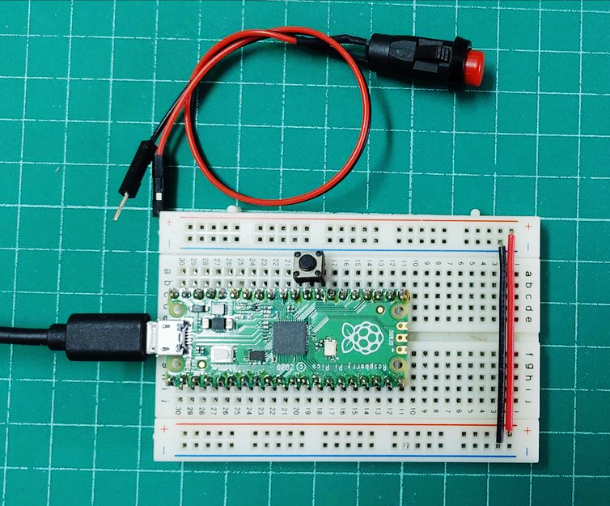
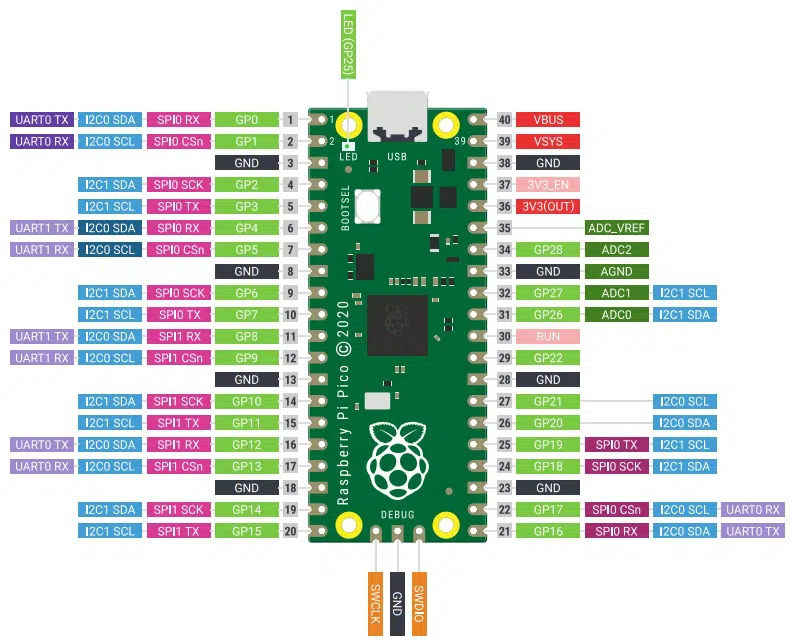
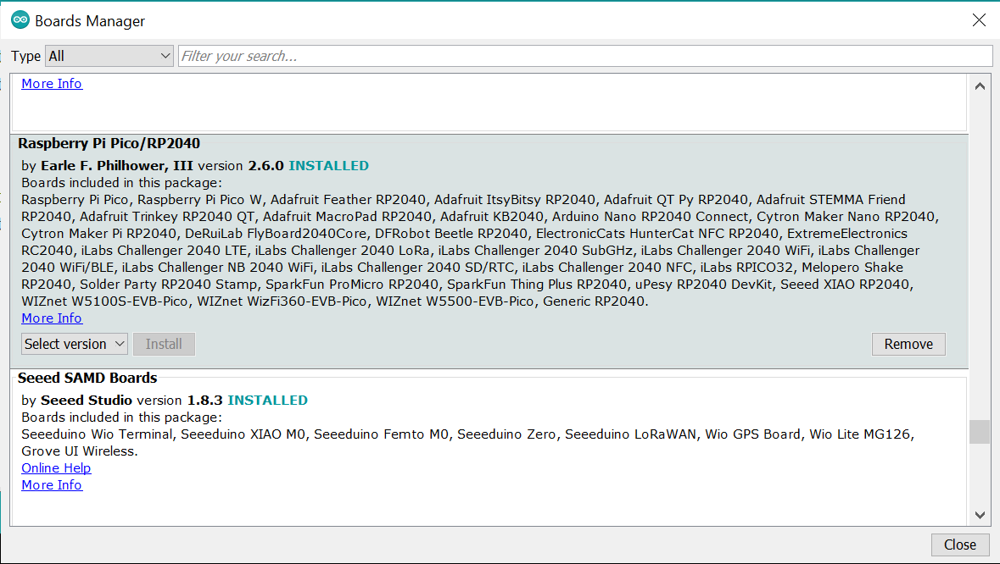
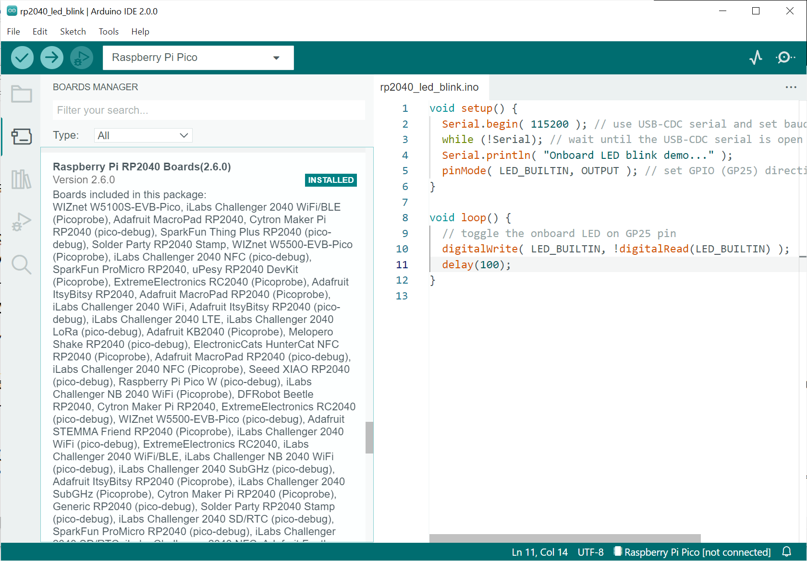
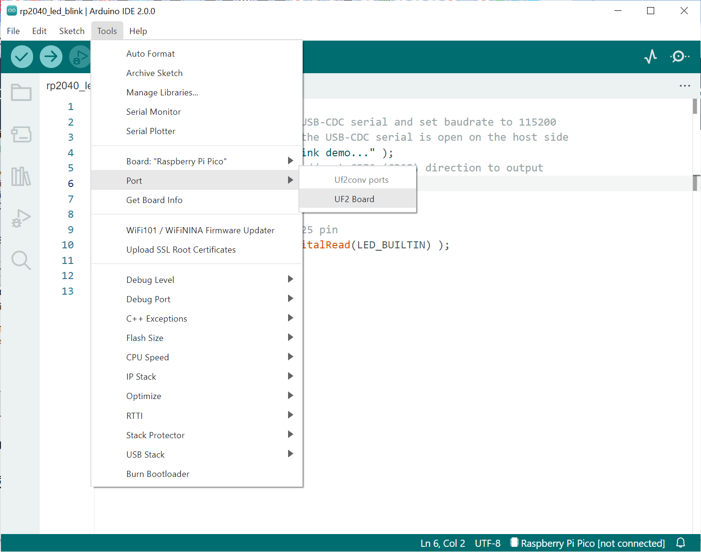
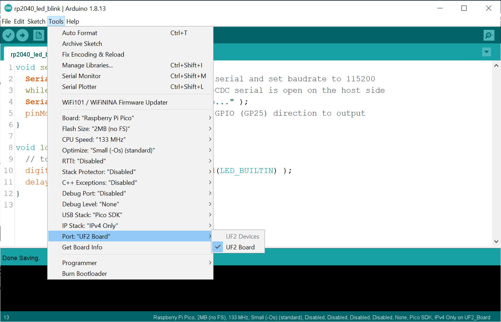
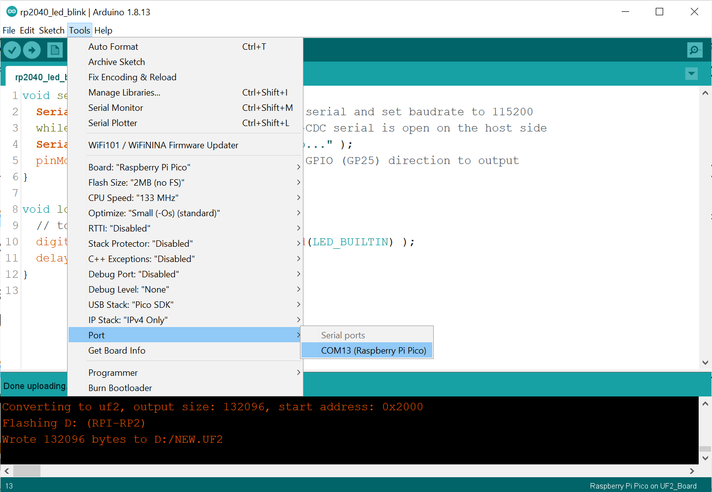
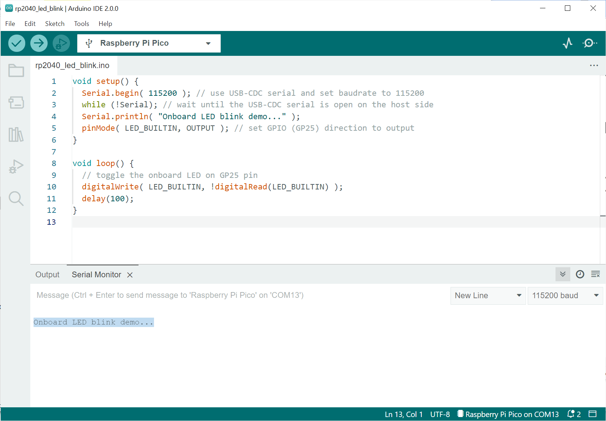

การใช้งาน Arduino IDE + Arduino Core for RP2040 สำหรับบอร์ด Raspberry Pi Pico#
Keywords: Raspberry Pi Pico, RP2040, Arduino RP2040 Core
▷ การเขียนโปรแกรม Arduino Sketch สำหรับ RP2040#
ในปัจจุบันมีตัวเลือกสำหรับการเขียนโปรแกรมไมโครคอนโทรลเลอร์ RP2040 อยู่หลายตัวเลือก เช่น C/C++ และ MicroPython / CirciutPython บทความนี้ แนะนำขั้นตอนการเขียนโปรแกรมด้วย Arduino IDE ในเบื้องต้น โดยเลือกใช้ Arduino RP2040 Core ซึ่งจัดทำโดย Earle Philhower (Online Documentation)
ตัวอย่างอุปกรณ์ที่ได้นำมาทดลองใช้งาน และใช้แรงดันไฟเลี้ยงจากพอร์ต USB

รูป: การใช้งานบอร์ด Raspberry Pi Pico บนเบรดบอร์ด และการต่อปุ่มกดสำหรับ RUN / RESET
เนื่องจากบอร์ด Raspberry Pi Pico ไม่มีปุ่มกดสำหรับรีเซตการทำงานของ RP2040 ดังนั้นแนะนำให้ต่อปุ่มกดที่ขา RUN กับ GND ของบอร์ด (เมื่อกดปุ่ม RUN จะเปลี่ยนเป็นลอจิก LOW แต่ถ้าไม่กดปุ่มหรือปล่อย จะได้ HIGH)

รูป: แผนผังแสดงตำแหน่งของขาบนบอร์ด Raspberry Pi Pico RP2040
หากยังไม่เคยได้ติดตั้งใช้งาน ให้ดาวน์โหลดและติดตั้งซอฟต์แวร์ Arduino IDE มีสองเวอร์ชันคือ เวอร์ชันเก่า v1.8.x (Classic) และ เวอร์ชันใหม่ v2.0.0+ (Pro)
เปิดใช้งาน Arduino IDE แล้วไปที่เมนู File->Preferences ซึ่งจะมีหน้าต่างใหม่ปรากฏ (Popup Dialog Window) แล้วเพิ่มรายการ URL ต่อไปนี้ ในช่อง "Additional Boards Manager URLs" แล้วกดปุ่ม OK
https://github.com/earlephilhower/arduino-pico/releases/download/global/package_rp2040_index.json
จากนั้นไปที่เมนู Tools->Board...->Boards Manager และติดตั้ง RaspberryPi Pico/RP2040 (ทดลองใช้เวอร์ชัน v2.6.0)

รูป: การติดตั้ง Arduino Core สำหรับซอฟต์แวร์ Arduino IDE (Classic)

รูป: การติดตั้ง Arduino RP2040 Core สำหรับซอฟต์แวร์ Arduino Pro (v2.0.0)

รูป: การเลือก UF2 Board ใน Arduino Pro (v2.0.0) เพื่ออัปโหลดไฟล์ Arduino Sketch ไปยังบอร์ด Pico RP2040 (เมื่ออยู่ในโหมด Bootloader แล้ว)
▷ โค้ดตัวอย่าง: Onboard LED Blink#
ถัดไปเป็นโค้ดตัวอย่างสาธิตการเปิดใช้งานพอร์ต Serial เพื่อส่งข้อความ Onboard LED blink demo...
จากบอร์ด Pico ไปยังคอมพิวเตอร์ของผู้ใช้ และทำให้ LED กระพริบได้
โดยเปลี่ยนหรือสลับสถานะลอจิกที่ขา GP25 ซึ่งมีวงจร LED อยู่บนบอร์ด
void setup() {
Serial.begin( 115200 ); // use USB-CDC serial and set baudrate to 115200
while (!Serial); // wait until the USB-CDC serial is open on the host side
Serial.println( "Onboard LED blink demo..." );
pinMode( LED_BUILTIN, OUTPUT ); // set GPIO (GP25) direction to output
}
void loop() {
// toggle the onboard LED on GP25 pin
digitalWrite( LED_BUILTIN, !digitalRead(LED_BUILTIN) );
delay(100);
}
ถัดไปให้เชื่อมต่อบอร์ด Raspberry Pi Pico กับเครื่องคอมพิวเตอร์ของผู้ใช้ผ่านทางพอร์ต USB
กดปุ่ม BOOT ค้างไว้ แล้วกดปุ่ม RUN (RESET) จากนั้นปล่อยปุ่ม RUN ก่อนแล้วจึงปล่อยปุ่ม BOOT
เพื่อให้บอร์ดเข้าสู่โหมด Bootloader จะมองเห็นไดรฟ์ชื่อ RPI-RP2 ในเครื่องคอมพิวเตอร์ของผู้ใช้ Windows
และสามารถนำไฟล์ .UF2 ซึ่งเป็นไฟล์เฟิร์มแวร์สำหรับใช้งานกับบอร์ด Raspberry Pi Pico ได้

รูป: การตั้งค่าตัวเลือกก่อนทำขั้นตอน Build และ Upload ใน Arduino IDE v1.8.x
เมื่อเริ่มต้นใช้งาน อาจมองไม่เห็นพอร์ตอนุกรม (Serial) ที่เชื่อมกับบอร์ด Pico RP2040 ดังนั้นจะต้องทำให้บอร์ดเข้าสู่โหมด Bootloader ตามที่ได้กล่าวไป
โค้ดตัวอย่างนี้มีการใช้คำสั่ง Serial.begin(...) ซึ่งจะทำให้สามารถสื่อสารกับบอร์ดได้ผ่านทาง
USB-to-Serial (USB-CDC) เมื่ออัปโหลดไฟล์เฟิร์มแวร์ได้สำเร็จแล้ว จะทำให้มองเห็นพอร์ตอนุกรม
เมื่ออัปโหลดไฟล์เฟิร์มแวร์ได้สำเร็จแล้ว ให้เลือกหมายเลขพอร์ตอนุกรมซึ่งตรงกับบอร์ด Pico ในขณะใช้งาน และไปยัง Tools->Serial Monitor ของ Arduino IDE จึงจะได้รับข้อความจากบอร์ด Pico RP2040 แล้วจะเห็น LED กระพริบ

รูป: เลือกพอร์ตอนุกรมที่เชื่อมต่อกับบอร์ด Pico RP2040 และเปิดใช้งาน Serial Monitor ของ Arduino IDE (Classic)

รูป: ข้อความที่ได้รับเมื่อเปิด Arduino IDE (Pro) - Serial Monitor
▷ กล่าวสรุป#
บทความนี้แนะนำการใช้งาน Arduino IDE ร่วมกับ Arduino Core for RP2040 ที่ได้พัฒนาโดย Earle Philhower (ดูเอกสารภาษาอังกฤษ Arduino-Pico Documentation ซึ่งเป็นไฟล์ .pdf สำหรับศึกษาเพิ่มเติมเกี่ยวกับชุดคำสั่ง API)
This work is licensed under a Creative Commons Attribution-ShareAlike 4.0 International License.
Created: 2022-10-09 | Last Updated: 2022-10-09